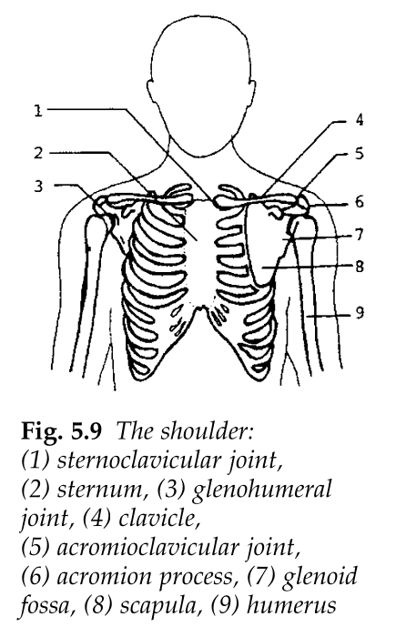
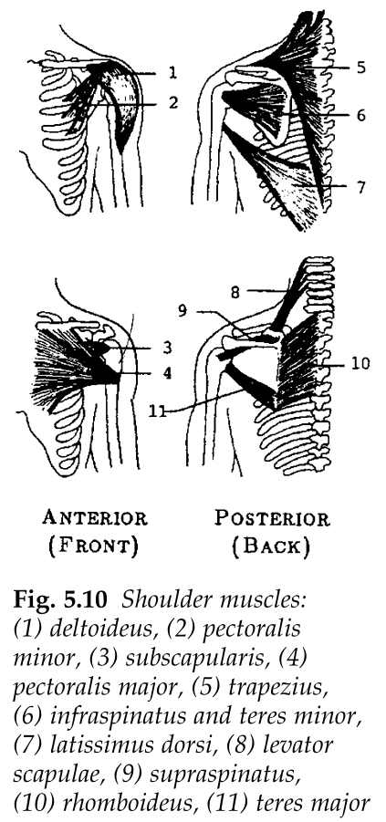
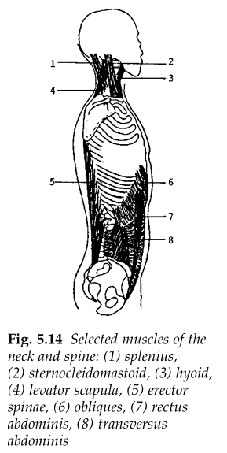
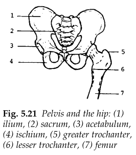
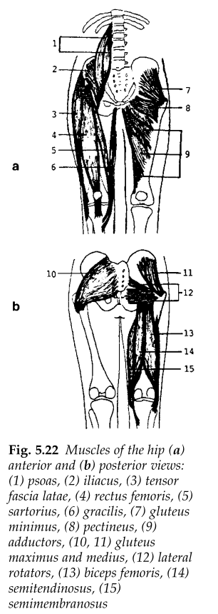

Ask AI:
The complex structure can be divided into two parts: the shoulder joint and the shoulder girdle.
will be examined.


Three major motions are:
The complex structure that supports the shoulder joint
Four major motions are:
A person strengthening the shoulder by means of dumbbell exercise:
write down the equations of motion (static equilibrium equations)
For a woman of height 165 cm and weight 57 kg, solve the unknowns using the table of antropometric data below, when she is lifting a 5-kg dumbbell.
Two particularly important joints of the spinal column are those with the head (occiput bone of the skull) and the first cervical vertebrae, atlas, and the atlas and the second vertebrae, the axis.

For a head weighing 50-N, estimate the angles \(\theta\) and \(\beta\) from the image and use these values to determine the muscle force, \(F_M\) (that develops in the neck extensors) and the joint reaction force, \(F_J\) (at the atlantooccipital joint).
The resolution of the joint reaction force into its normal and shear components is important for the evaluation of joint health. The contact plane needs to be identified in order to do this.
Assuming that the line of pull of the resultant muscle force exerted by the erector spinae muscles is parallel to the trunk (i.e., making an angle \(\theta\) with the vertical), determine \(F_M\) and \(F_J\) in terms of \(\theta\), given \(a\), \(b\), \(c\), \(W_0\), \(W_1\), and \(W\).


\[F_M = \frac{(cW-bW_1)\cos\beta - a(W=W_1)\cos\alpha}{a(\cos\alpha\sin\theta - \sin\alpha\cos\theta)}\]
\[F_M = \frac{\cos\phi\,W_2}{\sin(\phi-\theta)} \]
\[F_J = \frac{\cos\theta\,W_2}{\sin(\phi-\theta)} \]
Ask AI:
By the end of this lecture students should be able to: